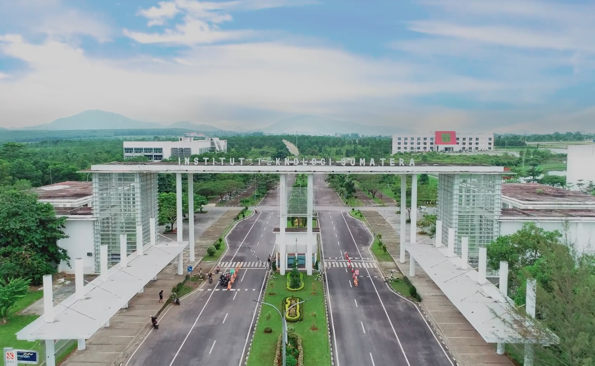

Tentang ITERA
Institut Teknologi Sumatera (ITERA) adalah perguruan tinggi negeri di Lampung yang fokus pada bidang sains, teknologi, dan inovasi. ITERA memiliki berbagai program studi yang dirancang untuk mencetak lulusan berkualitas dan siap menghadapi tantangan global.
Program Studi Populer
| No | Program Studi | Fakultas |
|---|---|---|
| 1 | Teknik Informatika | Fakultas Teknologi Industri |
| 2 | Teknik Sipil | Fakultas Teknik Infrastruktur dan Kewilayahan |
| 3 | Arsitektur | Fakultas Sains, Teknologi, dan Desain |
Visi & Misi ITERA
Visi ITERA adalah menjadi perguruan tinggi berbasis teknologi yang unggul di tingkat nasional maupun internasional. Misi ITERA mencakup penyelenggaraan pendidikan berkualitas, penelitian inovatif, serta pengabdian kepada masyarakat.
Fasilitas Kampus
ITERA memiliki berbagai fasilitas untuk mendukung kegiatan mahasiswa, seperti laboratorium, perpustakaan modern, asrama, pusat olahraga, hingga ruang kreatif untuk inovasi.
Kontak & Informasi
Alamat: Jl. Terusan Ryacudu, Way Huwi, Kec. Jati Agung, Lampung Selatan, Lampung.
Email: humas@itera.ac.id
Telepon: (0721) 8030188